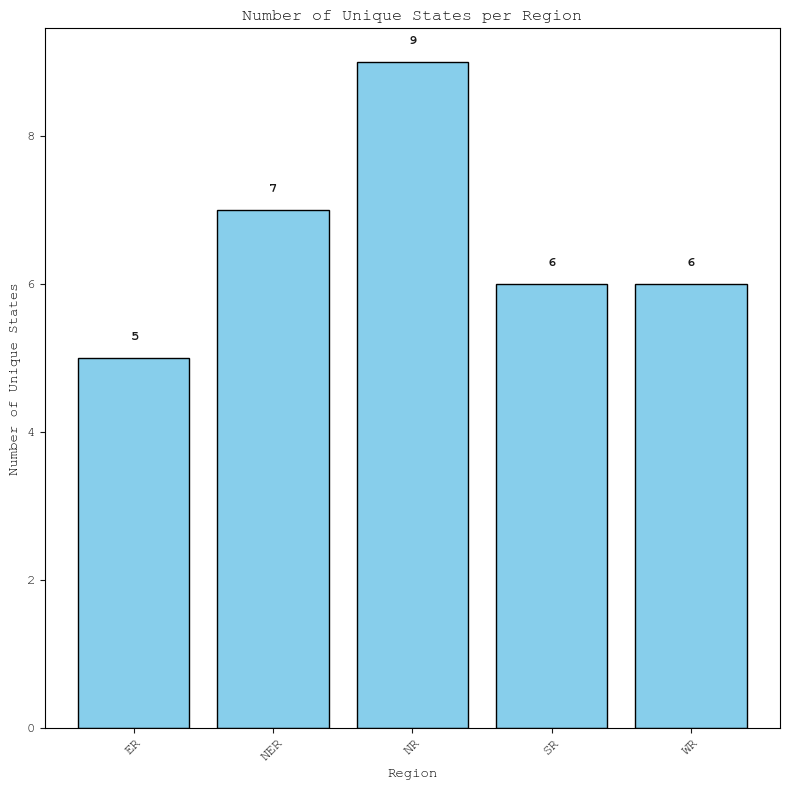
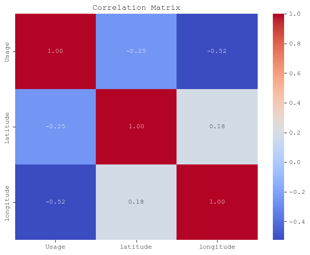
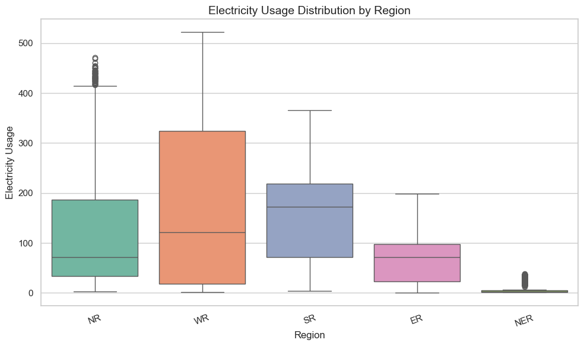
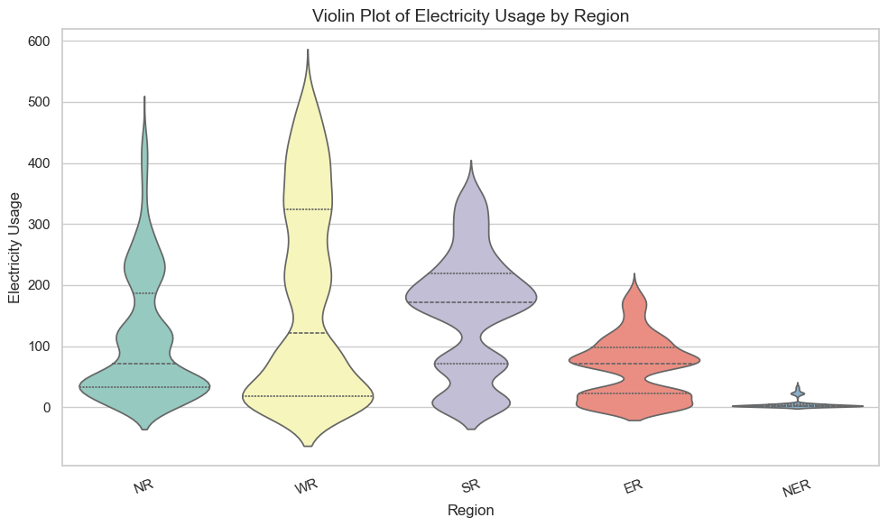
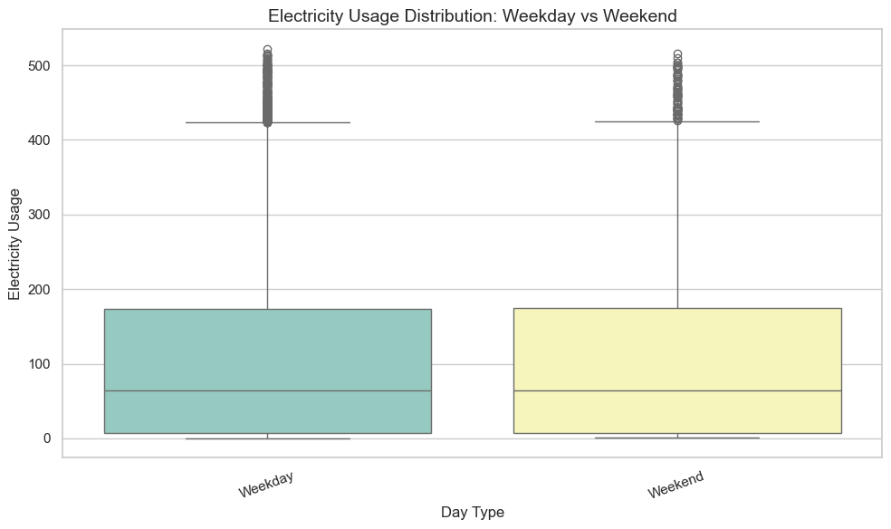
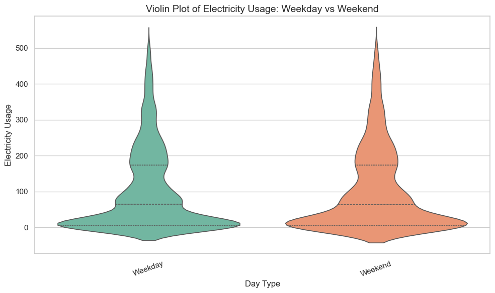
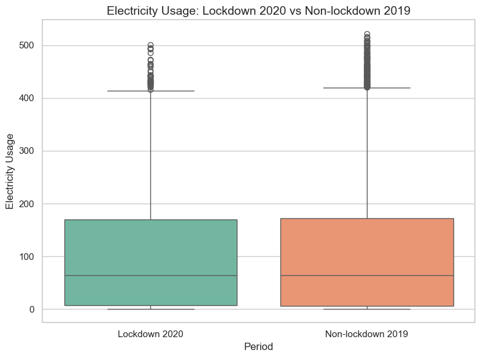
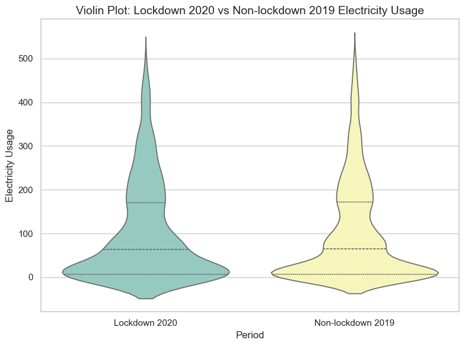

| States | Regions | latitude | longitude | Dates | Usage | |
|---|---|---|---|---|---|---|
| 0 | Punjab | NR | 31.519974 | 75.980003 | 02/01/2019 00:00:00 | 119.9 |
| 1 | Haryana | NR | 28.450006 | 77.019991 | 02/01/2019 00:00:00 | 130.3 |
| 2 | Rajasthan | NR | 26.449999 | 74.639981 | 02/01/2019 00:00:00 | 234.1 |
| 3 | Delhi | NR | 28.669993 | 77.230004 | 02/01/2019 00:00:00 | 85.8 |
| 4 | UP | NR | 27.599981 | 78.050006 | 02/01/2019 00:00:00 | 313.9 |
| 5 | Uttarakhand | NR | 30.320409 | 78.050006 | 02/01/2019 00:00:00 | 40.7 |
| 6 | HP | NR | 31.100025 | 77.166597 | 02/01/2019 00:00:00 | 30.0 |
| 7 | J&K | NR | 33.450000 | 76.240000 | 02/01/2019 00:00:00 | 52.5 |
| 8 | Chandigarh | NR | 30.719997 | 76.780006 | 02/01/2019 00:00:00 | 5.0 |
| 9 | Chhattisgarh | WR | 22.090420 | 82.159987 | 02/01/2019 00:00:00 | 78.7 |
IDS Writing Assignment
The dataset contains electricity usage data for various Indian states, recorded across different dates. Each row represents a state’s usage at a specific timestamp, along with its geographical coordinates (latitude and longitude) and its corresponding region (like NR for North Region). The dataset includes 16,599 entries across 6 columns. The Usage column holds the power consumption values, while the Dates column indicates the timestamp in DD/MM/YYYY HH:MM:SS format.
Data is in the form of a time series for a period of 17 months beginning from 2nd Jan 2019 till 23rd May 2020.
Below is the first 10 samples from the dataset.
Number of Null Values in all the corresponding columns:
States 0
Regions 0
latitude 0
longitude 0
Dates 0
Usage 0
dtype: int64Univariate Analysis
Lets look at data distribution across all the 33 states present in the dataset
Data is distributed evenly across all the states we consider in India.
Now, lets look at the data distribution across the 5 regions
Data is not evenly distributed when we look at the regions, as regions are composed of different states, so the number of states in each region being different causes the distribution to be uneven.
As mentioned above lets focus on how many states are present in each region

The number of region having more states, naturally have more data percentagewise
Following are stats for the Usage columns in the dataset
count 16587.000000
mean 103.072539
std 116.056017
min 0.300000
25% 6.700000
50% 64.600000
75% 174.000000
max 522.100000
Name: Usage, dtype: float64Data start date: 2019-01-02 00:00:00
Data ends end: 2020-12-05 00:00:00
Total days for which data is logged: 703 days 00:00:00The total time period(2019-01 to 2020-12) mentioned is more than 703 days, which means that there are some days missing for which no data has been logged, we will look at this in detail later
Bivariate Analysis
Now lets focus on average usage according to regions (as mentioned before)
(Add text here)
Next, we will see on average power usage for each state
States
Maharashtra 431.570179
Gujarat 323.039563
UP 314.036382
Tamil Nadu 300.738569
Rajasthan 218.443340
MP 208.283101
Karnataka 204.106759
Telangana 187.008549
Andhra Pradesh 176.151889
Punjab 141.145527
West Bengal 138.708151
Haryana 138.333598
Chhattisgarh 83.877137
Delhi 83.380716
Bihar 83.159443
Odisha 80.464612
Kerala 72.192445
J&K 44.264016
Uttarakhand 36.161155
HP 26.568191
Assam 24.960040
Jharkhand 23.842545
DNH 16.430616
Goa 11.093241
Pondy 7.473108
Meghalaya 5.646813
Chandigarh 4.141551
Tripura 4.089022
Manipur 2.494632
Nagaland 2.163273
Arunachal Pradesh 2.110579
Mizoram 1.707585
Sikkim 1.289044
Name: Usage, dtype: float64Throughout India we can see a huge variation in the power usage across states, from 431 units down to 1.28 units, tell us a lot about the diversity in India.
Power usage is in a way directly proportional to population, industrialisation, government policies, climate in that region, etc. This in many way tells us the diversity in India in all aspects of life.
Lets look at the mean usage of each state with thier locations on the map
This is just a nice visualisation to know geographically where each state lies, and what their average power usage is.
Let focus on top 10 states which consume maximum energy
Now lets look at India as a whole and see how the mean usage varied throughtout the entire period
Lets now look at the correlation matrix for usage latitude and longitude

Now let us look at if there are any outliers present in the usage column, and if then in which states
States Usage
5424 Maharashtra 522.1
1662 Maharashtra 516.4
1695 Maharashtra 515.8
5391 Maharashtra 513.9
5358 Maharashtra 513.6
... ... ...
15679 UP 425.6
3873 Maharashtra 425.5
13575 Maharashtra 425.1
7066 UP 425.1
6744 Maharashtra 425.1
[314 rows x 2 columns]
['Maharashtra' 'UP']From the above analysis we can cleary see that there exist around 314 outliers, but the interesting point is that they exist only in Maharashtra and UP, and the outlier values are high. this can due to fact that the population is very high in both these states, thus having high values of usage is quite justified compared to the other values
Monthly Usage Statistics (Grouped by State and Month):
count 792.000000
mean 103.845091
std 115.037608
min 1.031818
25% 7.216190
50% 70.458333
75% 176.917403
max 488.940000
Name: Usage, dtype: float64--------------------------------------------------------------------------- RuntimeError Traceback (most recent call last) File /opt/anaconda3/lib/python3.12/site-packages/bar_chart_race/_make_chart.py:428, in _BarChartRace.make_animation(self) 427 if self.html: --> 428 ret_val = anim.to_html5_video() 429 try: File /opt/anaconda3/lib/python3.12/site-packages/matplotlib/animation.py:1285, in Animation.to_html5_video(self, embed_limit) 1283 # We create a writer manually so that we can get the 1284 # appropriate size for the tag -> 1285 Writer = writers[mpl.rcParams['animation.writer']] 1286 writer = Writer(codec='h264', 1287 bitrate=mpl.rcParams['animation.bitrate'], 1288 fps=1000. / self._interval) File /opt/anaconda3/lib/python3.12/site-packages/matplotlib/animation.py:148, in MovieWriterRegistry.__getitem__(self, name) 147 return self._registered[name] --> 148 raise RuntimeError(f"Requested MovieWriter ({name}) not available") RuntimeError: Requested MovieWriter (ffmpeg) not available During handling of the above exception, another exception occurred: Exception Traceback (most recent call last) Cell In[58], line 8 5 df_race = df_race.sort_index() 7 # Run bar chart race ----> 8 bcr.bar_chart_race( 9 df=df_race, 10 filename=None, 11 orientation='h', 12 sort='desc', 13 n_bars=33, 14 fixed_order=False, 15 fixed_max=True, 16 steps_per_period=40, 17 interpolate_period=True, 18 label_bars=True, 19 period_length=2000, 20 period_fmt='%b %Y', 21 period_summary_func=lambda v, r: {'x': .99, 'y': .2, 22 's': f'Total Usage: {int(v.sum())}', 23 'ha': 'right', 'size': 8}, 24 perpendicular_bar_func=None, 25 figsize=(5, 4), 26 dpi=144, 27 cmap='dark24', 28 title='Monthly Power Usage(Mean) by Indian States', 29 bar_label_size=7, 30 tick_label_size=7, 31 shared_fontdict={'family': 'Courier New', 'color': '.1'}, 32 scale='linear', 33 bar_kwargs={'alpha': .7}, 34 filter_column_colors=True 35 ) File /opt/anaconda3/lib/python3.12/site-packages/bar_chart_race/_make_chart.py:783, in bar_chart_race(df, filename, orientation, sort, n_bars, fixed_order, fixed_max, steps_per_period, period_length, interpolate_period, label_bars, bar_size, period_label, period_fmt, period_summary_func, perpendicular_bar_func, figsize, cmap, title, title_size, bar_label_size, tick_label_size, shared_fontdict, scale, writer, fig, dpi, bar_kwargs, filter_column_colors) 461 ''' 462 Create an animated bar chart race using matplotlib. Data must be in 463 'wide' format where each row represents a single time period and each (...) 776 These sizes are relative to plt.rcParams['font.size']. 777 ''' 778 bcr = _BarChartRace(df, filename, orientation, sort, n_bars, fixed_order, fixed_max, 779 steps_per_period, period_length, interpolate_period, label_bars, bar_size, 780 period_label, period_fmt, period_summary_func, perpendicular_bar_func, 781 figsize, cmap, title, title_size, bar_label_size, tick_label_size, 782 shared_fontdict, scale, writer, fig, dpi, bar_kwargs, filter_column_colors) --> 783 return bcr.make_animation() File /opt/anaconda3/lib/python3.12/site-packages/bar_chart_race/_make_chart.py:446, in _BarChartRace.make_animation(self) 444 else: 445 message = str(e) --> 446 raise Exception(message) 447 finally: 448 plt.rcParams = self.orig_rcParams Exception: You do not have ffmpeg installed on your machine. Download ffmpeg from here: https://www.ffmpeg.org/download.html. Matplotlib's original error message below: Requested MovieWriter (ffmpeg) not available
Next we try to see the seasonal variation in usage in India using the ANOVA Test
Objective The goal of this analysis is to determine if there is a statistically significant difference in electricity usage across different seasons in India.
In here we are assuming the four seasons, as it is widely well known in India:
Winter: Decemeber, January, February
Summer: March, April, May
Monsoon: June, July, August
Post-Monsoon: September, October, Novemeber.
This is a generalisation of seasons, of course there are places in India, wherein, maybe the mentioned seasonal variation is not followed, but as a whole for India, this is a good way to divide the seasons.
We will be testing the following hypotheses using One-Way ANOVA:
Null Hypothesis (H₀): Mean electricity usage is the same across all seasons.
Alternative Hypothesis (H₁): At least one season has a different mean electricity usage.
(We would be using a p-value of 0.05)
ANOVA Test Result:
F-statistic: 0.1816
p-value: 0.9090

Test Output:
- F-statistic: 0.1816 (Ratio of variance between group means to variance within the groups)
- p-value: 0.9090 (Probability that the observed differences could have occurred by chance under the null hypothesis.)
Conclusion:
- If p-value < 0.05: Reject the null hypothesis ⇒ electricity usage does vary by season.
- If p-value ≥ 0.05: Fail to reject the null hypothesis ⇒ no significant seasonal variation in usage.
Since our p-value is very high compared to 0.05 we fail to reject the null hypothesis. There is no significant variation in usage as seasons change in India
Next we determine if there’s a statistically significant difference in power usage between weekdays and weekends using t-test
We will be testing the following hypotheses using T-test:
Null Hypothesis (H₀): Average power usage on weekdays equals weekends.
Alternative Hypothesis (H₁): Average power usage differs between weekdays and weekends.
(We would be using a p-value of 0.05)
T-Test Result (Weekday vs Weekend):
T-statistic: -0.0068
P-value: 0.9945

Test Output:
- T-statistic: -0.0068
- p-value: 0.9945
Conclusion:
- If p-value < 0.05: Reject the null hypothesis ⇒ electricity usage is same on the weekday and weekend.
- If p-value ≥ 0.05: Fail to reject the null hypothesis ⇒ No statistically significant difference found between weekday and weekend usage
Since our p-value is very high compared to 0.05 we fail to reject the null hypothesis. There is no significant difference in weekday and weekend usage
Next we determine if there’s a statistically significant difference in power usage across different regions using ANOVA
We will be testing the following hypotheses using One-way ANOVA:
Null Hypothesis (H₀): Average power usage is the same across all regions.
Alternative Hypothesis (H₁): Average power usage differs between at least two regions.
(We would be using a p-value of 0.05)
Regional Statistics:
mean std count
Regions
ER 65.492843 50.750027 2515
NER 6.165976 7.994403 3521
NR 111.830042 102.426873 4527
SR 157.945195 97.512207 3018
WR 179.048973 159.931286 3018
ANOVA Test Result (Usage across Regions):
F-statistic: 1645.3150
P-value: 0.0000

Tukey's HSD Results:
Multiple Comparison of Means - Tukey HSD, FWER=0.05
=====================================================
group1 group2 meandiff p-adj lower upper reject
-----------------------------------------------------
ER NER -59.3269 0.0 -66.3215 -52.3322 True
ER NR 46.3372 0.0 39.6742 53.0002 True
ER SR 92.4524 0.0 85.2189 99.6858 True
ER WR 113.5561 0.0 106.3227 120.7896 True
NER NR 105.6641 0.0 99.644 111.6841 True
NER SR 151.7792 0.0 145.1333 158.4252 True
NER WR 172.883 0.0 166.237 179.529 True
NR SR 46.1152 0.0 39.8192 52.4111 True
NR WR 67.2189 0.0 60.923 73.5149 True
SR WR 21.1038 0.0 14.2069 28.0006 True
-----------------------------------------------------Test Output:
- F-statistic: 1645.3150
- p-value: 0.0000
Conclusion:
- If p-value < 0.05: Reject the null hypothesis ⇒ Significant differences exist between regions.
- If p-value ≥ 0.05: Fail to reject the null hypothesis ⇒ No statistically significant difference between regions.
Since our p-value is much lower than 0.05, we reject the null hypothesis.
There is a statistically significant difference in electricity usage across different regions. We can also see that for every region there is a statistical difference from each other, goes on to say that no two regions have the same mean power usage
Next we determine if there’s a statistically significant difference in power usage between two specific periods using an Independent Two-Sample t-test
We will be testing the following hypotheses using Two-sample t-test:
Null Hypothesis (H₀): There is no difference in average power usage between the two periods.
Alternative Hypothesis (H₁): There is a difference in average power usage between the two periods.
(We would be using a p-value threshold of 0.05)
Lockdown Period Statistics (2020) vs Non-lockdown Period (2019):
2020 Lockdown Period:
count 2079.000000
mean 100.439490
std 113.730868
min 0.800000
25% 6.700000
50% 64.200000
75% 169.950000
max 500.400000
Name: Usage, dtype: float64
2019 Non-lockdown Period:
count 8910.000000
mean 102.299989
std 115.232474
min 0.500000
25% 6.600000
50% 64.350000
75% 172.200000
max 522.100000
Name: Usage, dtype: float64
T-Test Result (2020 Lockdown vs 2019 Non-lockdown Usage):
T-statistic: -0.6700
P-value: 0.5029

Test Output:
- T-statistic: -0.6700
- p-value: 0.5029
Conclusion:
- If p-value < 0.05: Reject the null hypothesis ⇒ Significant difference exists between the periods.
- If p-value ≥ 0.05: Fail to reject the null hypothesis ⇒ No statistically significant difference between the periods.
Since our p-value is greater than 0.05, we fail to reject the null hypothesis.
There is no statistically significant difference in electricity usage between the two periods. This indicates that, on average, the usage levels are similar across these periods.